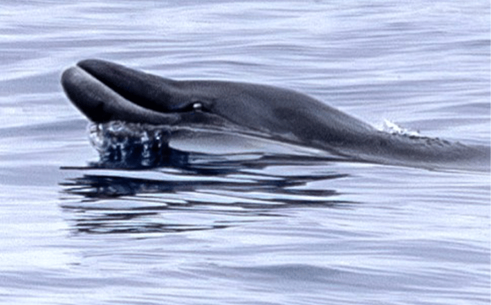

More than 60 miles off the coast of Baja, California, the crew of the Pacific Storm hauled an underwater microphone behind their boat while scanning the horizon with binoculars for signs of life.
For years, researchers had been searching for the source of a high-pitched click frequently detected in these waters. They had given it a name: BW43. BW for beaked whale, and 43 for the frequency of the tone, which peaks at 43 kilohertz. Modified for perception by human hearing, the noise sounds like a series of rapid clicks, like running a fingernail along the teeth of a plastic comb. In 2024, a team of scientists from the United States and Mexico embarked on a special research expedition to solve the mysterious source of the sound.
On the tenth morning of their trip, a spotter on the boat saw a dark, spindle-like shape emerge from the depths at a distance. Two whales breached and bobbed at the surface of the water around the boat. The scientists scrambled to ready their cameras and acoustic recorders. Suddenly, one whale emerged within 65 feet of the stern, and Robert Pitman, a whale researcher at the University of Oregon, aimed a biopsy crossbow at the whale, nicking a valuable sample of skin and blubber, which bounced into the water. A hungry albatross stabbed at the dart containing the hunk of tissue, but the scientists managed to grab the device before the bird flew off with it.
All these beaked whales have their own unique acoustic signals. They're like birds.
“We were all ecstatic, this was what we had been working towards the whole trip and we finally got it,” says Elizabeth Henderson, a bioacoustician at Naval Information Warfare Center in California.
The research team also scooped up a sample of water in the whales’ wake in hopes of gleaning flecks of DNA, and their hydrophones continued to record numerous clicks as the whales disappeared back into the ocean depths. Weeks later, DNA analysis from the biopsy revealed that the whales were gingko-toothed beaked whales. That June morning marked the first confirmed live sighting of the species at sea. And because the researchers managed to get a DNA sample and acoustic recording all in one go, they were finally able to confirm that this was indeed the animal making the BW43 call. Their findings were recently shared in a new study published in Marine Mammal Science.
According to the Society for Marine Mammology, 94 species of cetaceans roam the world’s rivers and oceans, and around a quarter of these are beaked whales. The marine mammals can reach the length of a bus and are meaty and tubular, with heads tapering to a pointy beak. Of the 24 beaked whale species, 16 and counting belong to a genus known as Mesoplodon, the most speciose of any whale genus. Yet to date, scientists know next to nothing about this diverse group of whales. “These are the least-known large animals left on this planet,” says Pitman. “We don't even know how many species there are.”

AN ELUSIVE MESOPLODON: A beaked whale surfaces as it glides through glassy waters. Beaked whales are one of the largest families of cetaceans, but the least familiar to science. Credit: Craig Hayslip
Historically, beaked whales have been near impossible to study. They live far offshore, dive deep, and usually only surface for a few minutes before disappearing again. They are defenseless against killer whales, and as such, are skittish in nature and plunge into the ocean depths to hide. What scientists do know about different species of beaked whales largely comes from strandings—washed up specimens that taxonomists study to definitively tell one species from another.
Spotting a mesoplodon in the wild is rare, and indentifying a free-swimming animal is nearly impossible. The most distinguishing feature of all of the known species of mesoplodon is a tusk-like snaggletooth that protrudes from each side of the jaw on males, mostly used for display and combat. In some cases, these teeth make it difficult for the creatures to open their mouths. Often, the best way for observers to recognize a mesoplodon is to catch an adult male baring its teeth.
“I never thought we'd know anything about beaked whales,” recounts Pitman, who has been studying marine mammals for nearly 50 years. Studies from the 1980s, he says, took a pretty pessimistic view of the possibility that scientists would be able to learn anything about these creatures.
But with the aid of modern acoustic and genetic technologies, that is quickly changing. “It turns out that all these beaked whales have their own unique acoustic signals. They're like birds,” says Pitman. Once researchers can match an echolocation pulse to a specific species, they can passively monitor ocean sounds to listen for the different species of beaked whales rather than relying on serendipity and a sharp eye. High frequency hydrophones can be towed behind ships, he says, or anchored to the seafloor. Microphones can also be fixed to buoys and dropped off in areas of interest to be collected later.
These are the least-known large animals left on this planet.
All these methods are much cheaper than manning a specialized crew at sea, adds Sasha Hooker, a whale researcher at the University of St. Andrews in the United Kingdom who was not involved with the study. Some acoustic signals have yet to be linked to specific species and vice versa. “Matching those then makes the whole thing much more powerful.”
The gingko-tooth beaked whale is only the latest in a slew of recent genetically confirmed live sightings paired with acoustic signals: In 2021 Pitman and his colleagues matched Hubbs’ beaked whales to a call known as BW37V off the Oregon coast, and in the same year, researchers spotted Sato’s beaked whales in Northern Japan. In 2023, researchers confirmed the first live sighting of Deraniyagala’s beaked whale in the South China Sea.
Still, mysteries abound. Perrin’s beaked whales are probably the most elusive of the bunch. They have only been sighted in strandings, six of which have been recorded. Pitman is gunning to see these whales live in the wild and match them to an acoustic cue. Similarly, Hector’s and spade-tooth beaked whales have yet to be spotted live in the wild. Most mysterious of all—if it even exists—is the Cross Seamount beaked whale. Scientists first recorded a distinctive pulse near Hawaii 20 years ago, but no one has been able to match the sound with a known species, so they named it after the seamount where they first recorded the call.
“At this point I think it’s very important to learn to tell these species apart because then we can go into the next mode, which is finding out where they are and how they’re doing,” says Pitman. Through passive monitoring, the scientists could determine where species live and how abundant they may be.
These efforts have some urgency. Pitman and Hooker worry that beaked whales, already rare, could disappear before we learn anything about them. More and more images of beaked whales show scars from fishing lines, and military sonar can spook the whales, sometimes causing mass strandings. Anthropogenic assaults on the ocean—from overfishing, to climate change, to shipping traffic—are piling up. Who knows what effect they might have on these elusive whales.
“It’s amazing that there’s something in the ocean we know nothing about,” says Pitman. “Technology is coming to the rescue. I just hope it's not too late.” 
To read more about whales in the pages of Nautilus, check out these stories:
Whales Run Aground by the Sun: Is the fault of whale strandings partially in the stars?
Who Speaks for the Whales? Rights for Cetaceans are Not Enough. They also deserve representation.
The Great Whale Conveyor Belt: The loss of whales has weakened the longest food chain on the planet
Lead image: Craig Hayslip